용접기능장 (2004-04-04 기출문제)
1과목: 임의구분
1. 다음 용접법 중 압접(壓接)에 속하는 것은?
- TIG용접
- 서브머지드용접
- 테르밋용접
- 전기저항용접
(정답률: 61%)

2. 직류 아크 용접에서 용접봉을 용접기의 음(-)극에, 모재를 양(+)극에 연결한 경우의 극성은?
- 직류 영극성
- 직류 용극성
- 직류 정극성
- 직류 역극성
(정답률: 73%)
3. 정격 2차 전류가 300[A], 정격사용률이 40[%]인 용접기로 180[A]로 용접할 때, 허용사용률[%]은?
- 약 111[%]
- 약 101[%]
- 약 91[%]
- 약 121[%]
(정답률: 85%)
4. 다음 용접봉의 건조온도가 300 ∼ 350[℃]인 것은?
- E4301
- E4303
- E4311
- E4316
(정답률: 89%)
5. 피복 배합제중 아크안정에 도움이 되는 것은?
- 탄산나트륨(Na2CO3)
- 붕산(H3BO3)
- 알루미나(Al2O3)
- 마그네슘(Mg)
(정답률: 70%)
6. 내균열성이 가장 좋은 피복아크 용접봉의 계통은?
- 일미나이트계
- 라임티탄계
- 고산화티탄계
- 저수소계
(정답률: 87%)
7. 연강용 피복금속아크 용접봉의 종류중 철분 산화철계에 해당되는 것은?
- E4324
- E4340
- E4326
- E4327
(정답률: 80%)
8. 피복 아크 용접에서 아크 길이가 길어지면 전압은 어떻게 되는가?
- 낮아진다.
- 높아졌다 낮아진다.
- 높아진다.
- 변동없다.
(정답률: 49%)
9. 용접방법중 용착효율(deposition efficiency)이 가장 낮은 것은?
- 서브머어지드 아크 용접(submerged arc welding)
- 플럭스 코어 용접(flux cored welding)
- 불활성 가스 금속 아크 용접(inert gas metal arc welding)
- 피복전기 용접(coated electrode welding)
(정답률: 73%)
10. 가스용접이나 절단에 사용되는 용접가스의 구비조건으로 틀린 것은?
- 연소속도가 느릴 것
- 불꽃의 온도가 높을 것
- 발열량이 클 것
- 용융금속과 화학반응을 일으키지 않을 것
(정답률: 75%)
11. 스카핑(scarfing)작업은 어느 것인가?
- 탄소 또는 흑연 전극봉과 모재와의 사이에 아크를 일으켜서 절단하는 방법이다.
- 강재 표면의 탈탄층 또는 홈을 제거하기 위해 얇게 타원형 모양으로 넓게 표면을 깎는 것이다.
- 탄소 아크 절단에 압축공기를 병용한 방법으로 결함제거, 절단 및 구멍뚫기 작업이다.
- 일종의 수중절단(under water cutting)이다.
(정답률: 95%)
12. 강판 두께 25.4[mm]를 가스 절단시에 드래그(drag)율을 보통 20[%]를 표준으로 하고 있다. 이때 드래그 길이 (drag length)는 약 얼마 정도인가?
- 3.5[mm]
- 5.08[mm]
- 5.85[mm]
- 6.45[mm]
(정답률: 71%)
13. 수중가스절단 작업이 가능한 물깊이는 다음 중 얼마정도까지 인가?
- 110m
- 125m
- 45m
- 10m
(정답률: 75%)
14. 가스 절단 토오치에는 동심형(同心型)과 이심형(異心型)이 있다. 이심형은 무슨식이라고도 하는가?
- 영국식이라고 한다.
- 프랑스식이라고 한다.
- 독일식이라고 한다.
- 스위스식이라고 한다.
(정답률: 86%)
15. 서브머지드 아크용접(SAW)장치에 대한 설명중 틀린 것은 ?
- 와이어 송급장치,접촉팁,용제호퍼를 일괄하여 용접헤드라 한다.
- 용접헤드는 주행 대차의 가이드 레일 위나 강판 위를 이동하게 된다.
- 송급속도 조정은 전압제어 장치에 의해 항상 아크길 이를 일정하게 유지하도록 한다.
- 용접 후 용융되지 않은 용제는 진공회수 장치로 회수하여 폐기한다.
(정답률: 69%)
16. 서브머지드 용접(submerged weld)과 같은 대전류를 사용하는 것에 알맞는 용융금속의 이행 방법은?
- 직선이행
- 스프레이이행
- 핀치효과이행
- 폭발형이행
(정답률: 48%)
17. 다음중 미그(MIG)용접의 와이어(wire)송급장치가 아닌 것은 어느 것인가?
- 푸시(push)방식
- 푸시-아웃(push-out)방식
- 풀(pull)방식
- 푸시-풀(push-pull)방식
(정답률: 93%)
18. 탄산가스 아크용접 즉 CO2 용접에서 다음중 어느 극성으로 연결하여 사용해야 하는가? (단, 복합와이어는 사용하지 않음)
- 교류(AC)를 사용하므로 극성에 제한이 없다.
- 직류(DC)전원을 사용하며 극성에 제한없다.
- 직류정극성(DCSP)을 사용한다.
- 직류역극성(DCRP)을 사용한다.
(정답률: 65%)
19. 플럭스 코어드 아크용접(flux cored arc welding)의 특징이 아닌 것은?
- 용접속도를 빨리할 수 있다.
- 용착률(deposition rate)이 상당히 크다.
- 용입(penetration)은 미그(MIG)용접보다 작다.
- 아래보기 이외의 자세용접도 용이하게 할 수 있다.
(정답률: 83%)
20. 플라스마(plasma)를 구성하는 물질이 아닌 것은?
- 양이온 (positive ions)
- 중성자 (neutral atoms)
- 음전자 (negative electrons)
- 양전자 (positive electrons)
(정답률: 73%)
2과목: 임의구분
21. 다음은 전자 빔 용접(electron beam welding)의 응용범위에 대하여 열거한 것이다. 잘못된 것은 어느 것인가?
- 천공
- 후판의 용접
- 미크론(micron)용접
- 스카핑(scarfing)
(정답률: 84%)
22. 모재를 겹쳐 놓은 상태에서 접착할 부분의 작은 면적에 전극을 가압하여 저항 용접하는 것으로서,일반적으로 얇은 판의 용접에 잘 쓰이며 자동차,철도차량, 전기기기,제관등의 판금관계에 널리 응용되는 용접은?
- 탄소 아크 용접
- 원자수소 용접
- 스터드(stud) 용접
- 스포트(spot) 용접
(정답률: 81%)
23. 용접부에 생기는 용접 균열 결함 종류에 해당되지 않는 것은?
- 가로 균열
- 세로 균열
- 플랭크 균열
- 비드밑 균열
(정답률: 80%)
24. 황동용접시 산화아연으로 인한 중독을 방지하는 방법은?
- 마스크를 냉수에 적시어 사용한다.
- 마스크를 온수에 적시어 사용한다.
- 마스크를 가성소다액에 적시어 사용한다.
- 마스크를 착용한다.
(정답률: 60%)
25. 전기 용접때 감전사고를 방지하기 위하여 가장 중요한 것은?
- 접지 설비
- 전류계 설치
- 고압계 설치
- 작업등 설치
(정답률: 98%)
26. 스테인레스강(stainless steel)의 용접성에 관한 설명중 틀린 것은?
- 티그나 미그 용접방법으로 하면 좋다.
- 오스테나이트(austenite)강의 용접성이 마텐자이트(martensite)강보다 좋다.
- 될수있는한 저온에서 용접하면 좋다.
- 피복전기 용접법으로 할 때는 직류정극성(DCSP)이 좋다.
(정답률: 55%)
27. 백선철에 대한 설명이 아닌 것은?
- 파면이 회색이다.
- 경도가 크고 절삭이 곤란하다.
- 제강용으로 사용한다.
- 탄소는 철과 화합상태로 되어있다.
(정답률: 71%)
28. 주철의 용접시 주의사항 중 틀린 것은?
- 균열의 보수는 균열의 연장을 방지하기 위하여 균열의 끝에 작은 구멍을 뚫는다.
- 큰 물건이나 두께가 다른 것을 용접할 때는 예열과 후열후 서냉작업을 반드시 행한다.
- 비드 배치는 길게 하고 용입을 깊게 하도록 한다.
- 용접전류는 필요 이상 높이지 말고 직선 비드를 배치한다.
(정답률: 76%)
29. 주조용 Mg합금으로 Mg - Al계 합금의 대표적인 것은?
- 다우메탈(dow metal)
- 엘렉트론(elektron)
- 미쉬메탈(misch metal)
- 반메탈(bahm metal)
(정답률: 62%)
30. 풀림의 종류에 해당되지 않는 것은?
- 확산풀림
- 구상화풀림
- 완전풀림
- 등온풀림
(정답률: 52%)
31. 두께가 다른 여러가지 용접물을 노(爐)내에서 응력제거 열처리를 하고자 한다. 열처리 방법 중 알맞은 것은?
- 가장 두꺼운 용접물을 기준으로 열처리 시간을 정한다.
- 용접물의 평균 두께를 측정하여 열처리 시간을 정한다.
- 두께별로 분류하여 2단계(2 step method)로 열처리 한다.
- 두께가 1[inch] 이상 차이나는 것은 분류하여 따로 열처리 하도록 한다.
(정답률: 68%)
32. 응력 부식(corrosion)에 대한 설명으로 옳은 것은?
- 응력이 존재하면 부식이 촉진되는 것을 응력 부식이라 한다.
- 부식이 일어나면 응력이 증가한다.
- 응력이 집중되면 부식은 잘 안 일어난다.
- 재료에 인장응력이 가해지면 부식이 잘 안 일어난다.
(정답률: 77%)
33. 인장을 받는 맞대기 용접이음에서 굽휨모멘트 : M[kgf-mm] 굽휨 응력 : σ b[kgf/mm2], 용접길이 : L[㎜]일 때, 용접치수 : t[㎜]를 구하는 식으로 옳은 것은?
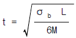
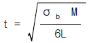
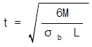
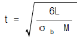
(정답률: 62%)
34. 재료의 안전율을 바르게 나타낸 식은? (단,안전율 ＞ 1)
- 인장강도/탄성강도
- 허용응력/인장강도
- 인장강도/허용응력
- 인장강도/극한강도
(정답률: 60%)
35. 지그(jig)를 구성하는 기계 요소에 해당되지 않는 것은?
- 공작물의 내마모장치
- 공작물의 위치 결정장치
- 공작물의 클램핑장치
- 공구의 안내장치
(정답률: 60%)
36. 탄소강에 대한 후열처리의 기능을 틀리게 기술한 것은?
- 잔류응력 경감
- 인성(toughness)증가
- 오스테나이트 조직의 함량 증가
- 균열 감수성 증가
(정답률: 36%)
37. 용접 결함과 그 원인을 짝지은 것으로 틀린 것은?
- 변형 - 용접부의 과열
- 기공 - 용접봉의 습기
- 슬래그 혼입 - 전층의 슬랙제거 불완전
- 용입부족 - 수소용해량의 과다
(정답률: 88%)
38. 용접 금속이 응고할 때 방출된 가스 때문에 발생되는 것으로 상당히 큰 거품으로 주위가 먼저 응고된 경우에 형성되는 용접 구조상의 결함은?
- 피트(pit)
- 은점(fish eye)
- 슬랙섞임(slag inclusion)
- 선상조직(ice flower structure)
(정답률: 38%)
39. 용접부 균열 발생에 대한 원인 설명 중 적절하지 못한 것은?
- 모재안에 황 함유량이 많을 때
- 용접봉의 선택을 잘못했을 때
- 적정한 예열, 후열을 하지 않았을 때
- 수축이 큰 이음을 먼저 용접하였을 때
(정답률: 76%)
40. 용접후 처리인 노내풀림 응력제거에서 두께 25[㎜] 보일러용 강판은 노내에서 몇 도로 몇 시간 유지해야 하는가?
- 625 ± 25[℃]에서 1시간
- 625 ± 25[℃]에서 2시간
- 725 ± 25[℃]에서 2시간
- 725 ± 25[℃]에서 1시간
(정답률: 73%)
3과목: 임의구분
41. 저온응력 완화법에서는 용접선의 양쪽을 폭 150[㎜] 정도로 몇 [℃]정도 가열하였다가 수냉시키는가?
- 50 - 100[℃]
- 150 - 200[℃]
- 450 - 600[℃]
- 650 - 800[℃]
(정답률: 53%)
42. 열영향부(H.A.Z) 가장자리 가까운 곳에 나타나는 형이고 계단형태로, 구속을 많이 받는 용접부 또는 다층 용접부에서 용접 중 또는 용접직후 발생하는 용접결함은?
- 라멜라 균열(lamella tearing crack)
- 힐 크랙(heel crack)
- 토 균열(toe crack)
- 비드 밑 균열(under bead crack)
(정답률: 67%)
43. 탄소강의 용접부는 야금적으로 2개의 구역으로 나누어진다. 무엇과 무엇인가?
- 원질부와 용착금속부
- 원질부와 열 영향부
- 과열금속부와 급냉금속부
- 용착금속부와 열 영향부
(정답률: 73%)
44. 열영향부(HAZ)의 재질을 향상시키기 위해서 흔히 사용되는 방법은?
- 용접부의 예열과 후열
- 특수용가재 사용
- 고장력강 용접봉의 사용
- 특수플럭스(용제) 사용
(정답률: 83%)
45. 기체를 가열하여 양이온과 음이온이 혼합된 도전(導電)성을 띤 가스체를 적당한 방법으로 한 방향에 분출시켜, 각종 금속의 용접 및 절단 등에 이용하는 용접은?
- 서브머지드 아크용접
- MIG용접
- 피복아크 용접
- 플라스마 젯트 용접
(정답률: 83%)
46. 후판절단 등에 쓰이는 절단산소 분출구의 알맞은 형상은?
- 직선형
- 동심형
- 다이버젠트형
- 저속다이버젠트형
(정답률: 48%)
47. X - 선 투과 시험으로 쉽게 검출되지 않는 용접결함은?
- 기공
- 미세한 비드 밑터짐
- 용입불량
- 슬래그 혼입
(정답률: 65%)
48. 모재에 라미네이션(LAMINATION)이 발생하였다. 이 결함을 찾는 데 가장 좋은 비파괴검사 방법은?
- 침투탐상시험
- 자분탐상시험
- 방사선 투과시험
- 초음파 탐상시험
(정답률: 72%)
49. 자분탐상검사에서 피검사물의 자화방법은 물체의 형상과 결함의 방향에 따라 여러가지로 분류 하는데, 다음 중 그 분류 방법에 해당하지 않는 것은?
- 축통전법
- 코일법
- 극간법
- 회전법
(정답률: 72%)
50. TIG 용접에 대한 설명이 아닌 것은?
- Ar 가스 속에서 용접한다.
- 텅스텐 전극을 사용한다.
- 심선을 전극으로 한다.
- 특수 아크용접에 속한다.
(정답률: 70%)
51. 다음 중 Mg-Aℓ -Zn계 합금의 대표적인 것은?
- 도우메탈
- 엘렉트론
- 하이드로날륨
- 라우탈
(정답률: 30%)
52. 열팽창계수가 유리나 백금과 거의 동일하므로 전구 도입선에 사용되는 불변강은 어느 것인가?
- 플래티나이트(Platinite)
- 엘린바(Elinvar)
- 스텔라이트(Stellite)
- 인바(Invar)
(정답률: 50%)
53. 용접시의 온도분포는 열전도율에 따라 많은 영향을 미치게 되는데 다음 금속 중 열전도율이 가장 작은 것은?
- 연강
- 알루미늄
- 스테인리스강
- 구리
(정답률: 50%)
54. 니켈 65∼70％, 철 1.0∼3.0％, 나머지는 구리로 된 합금으로서 내식성이 우수하고 주조성과 단련이 잘되어 화학 공업용으로 널리 사용되고 있는 것은?
- 크로멜(chromel)
- 인코넬(inconel)
- 모넬메탈(monel metal)
- 콘스탄탄(constantan)
(정답률: 41%)
55. 샘플링 검사의 목적으로서 틀린 것은?
- 검사비용 절감
- 생산공정상의 문제점 해결
- 품질향상의 자극
- 나쁜 품질인 로트의 불합격
(정답률: 33%)
56. 월 100대의 제품을 생산하는데 세이퍼 1대의 제품 1대당 소요공수가 14.4 H 라 한다. 1일 8 H, 월 25일, 가동한다고 할 때 이 제품 전부를 만드는데 필요한 세이퍼의 필요대 수를 계산하면? (단,작업자 가동율 80 %, 세이퍼 가동율 90 % 이다.)
- 8대
- 9대
- 10대
- 11대
(정답률: 46%)
57. 다음의 PERT/CPM에서 주공정(Critical path)은? (단, 화살표 밑의 숫자는 활동시간을 나타낸다.)
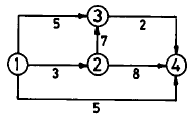
- ① - ③ - ② - ④
- ① - ② - ③ - ④
- ① - ② - ④
- ① - ④
(정답률: 45%)
58. 제품공정분석표에 사용되는 기호 중 공정간의 정체를 나타내는 기호는?
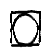
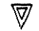
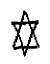
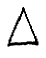
(정답률: 66%)
59. T Q C (Total Quality Control)란?
- 시스템적 사고방법을 사용하지 않는 품질관리 기법이다.
- 아프터 서비스를 통한 품질을 보증하는 방법이다.
- 전사적인 품질정보의 교환으로 품질향상을 기도하는 기법이다.
- QC부의 정보분석 결과를 생산부에 피드백하는 것이다
(정답률: 67%)
60. 계수값 관리도는 어느 것인가?
- R관리도
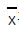
관리도- P관리도
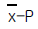
관리도
(정답률: 30%)